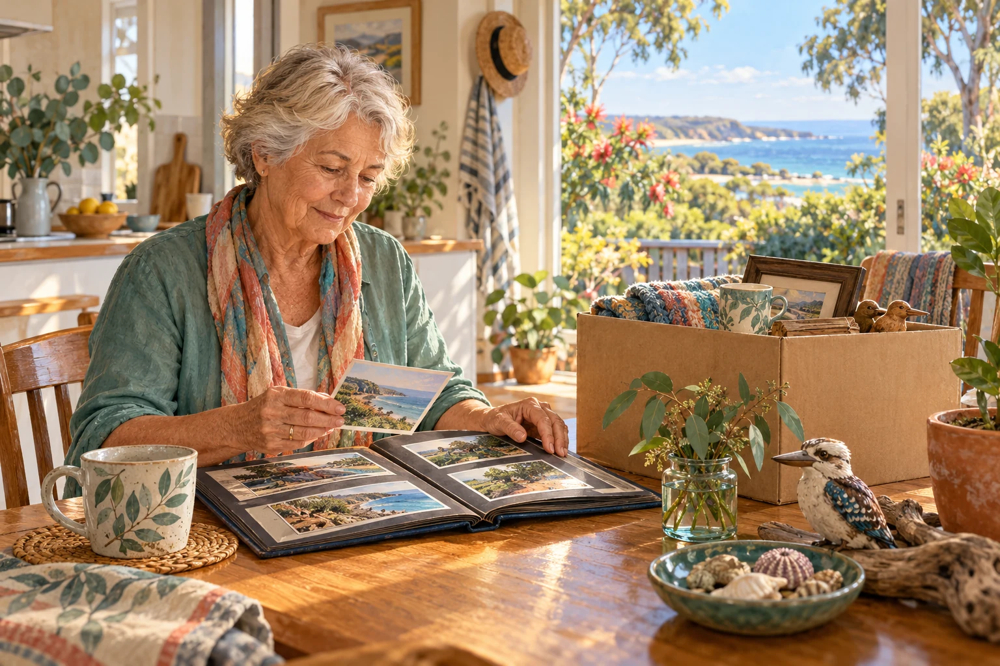

Reduce the work of starting again.
Recovery often involves repeated conversations while people manage damage, care, interrupted work and uncertainty. A personal Aura would help retain the history of an enquiry: its reference, actual reply, next agreed action and unresolved questions.
A draft note remains different from an accepted service record. Eligibility and assistance decisions stay with the providing organisation. The proposed benefit is a clearer enquiry and visible follow-up, with chosen information available when the person needs it. Queensland recovery planning and Redland’s Alfred recovery record provide the operating context. [R15] [R23]
A familiar place, kept on your terms.
A memory palace uses a familiar place to organise chosen memories. Photographs, stories, objects, sound and selected spatial records might preserve a home, garden or community space that has changed. A person chooses what to retain, revisit, correct or leave alone.
A place twin is a dated representation of a location, with its sources and assumptions. Personal recollections have their own meaning. Private memories do not automatically become part of a shared civic model. Reconstruction also respects the rights and cultural authority attached to the material. [P2]

This is supportive continuity to explore. It establishes neither a treatment nor a promise of memory improvement. The person’s wishes, access requirements and wellbeing guide how the experience develops.
Leave room for changing priorities.
One person wants help with paperwork; another wants a quiet meal. Someone is ready to reconnect through music, sport, culture or environmental care. Rest and professional support have their own place. A disaster becomes part of a person’s history while their interests and possibilities keep growing.
The National Principles for Disaster Recovery recognise different pathways and timeframes, community context and participation. Those principles support a continuing personal relationship that changes with the person. [R8]
Try Everything opportunities and chosen civic contribution become relevant when someone wants them. No C-Hour target determines access to recovery assistance or a person’s standing in the community.
Carry learning into the next season.
A weak handover, an inaccessible message or a service dependent on one worker becomes a practical improvement question. Affected people help decide which changes matter. Records identify the tested conditions and whose work remains unresolved.
The aim is adaptive whole-of-life support: useful understanding that survives a changed home, device, service or living arrangement, and helps the person develop the next chapter of life.